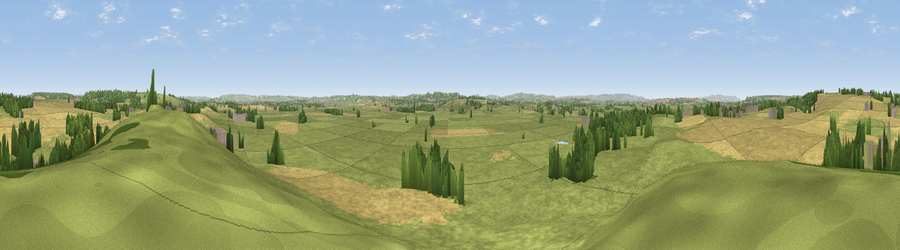

Viewpoint near Long Sutton
#18599 in England · top 45% of its area beats it · near Long SuttonWhere it is
The exact computed spot (ST 48125 24875). Click the marker for map links.
The view, rendered

A 360° render of this exact spot computed from the terrain model, tree cover and land cover — summer colours, afternoon light, calibrated against photographs of famous viewpoints. Real trees, hedges and buildings will differ in detail.
The panorama
Grey silhouette: terrain skyline in each direction (720 bearings, Earth curvature and refraction included). Dashed green: skyline with trees (+15 m) and buildings (+8 m) as obstacles. Blue strip: how far the ground is visible on each bearing.
Where the view opens
Wedge length = distance to the farthest visible ground on that bearing (vegetation-aware). Rings at 10, 25 and 50 km.
What fills the view
66% grassland · 26% cropland · 7% woodland ·
Angular shares of the visible panorama (visual magnitude), not map area. Landscape diversity 0.37 (0–1 Shannon).
Key numbers
More beautiful places nearby
The staircase of upgrades: each row has a higher view potential than everything closer. Driving times are estimates from straight-line distance, calibrated against real road routing — check an actual route before setting out.
| Place | Direction | Drive | Score |
|---|---|---|---|
| Viewpoint near Kingsdon | ENE · 3 km | ~8 min | 67.2 |
| Ham Hill | S · 8 km | ~15 min | 73.5 |
| Glastonbury Tor | NNE · 14 km | ~25 min | 75.8 |
| Socombe Hill | NW · 16 km | ~29 min | 76.4 |
| Viewpoint near Hewish | SSW · 17 km | ~29 min | 78.5 |
| Lewesdon Hill | S · 24 km | ~39 min | 83.3 |
| Viewpoint near West Bagborough | WNW · 32 km | ~49 min | 84.3 |
| Viewpoint near North Chideock | SSW · 33 km | ~51 min | 87.1 |
51.02090, -2.74097 · source: screening · position refined by local search. Computed location — check access rights before visiting.